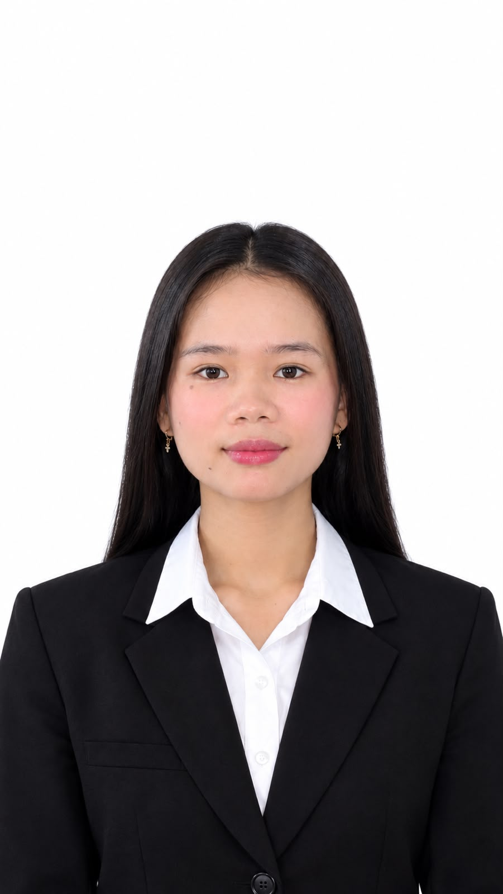

Putri Christianti Harefa
Lulusan Teknik Elektro yang mengerjakan elektronika daya, instrumentasi & kontrol, otomasi PLC & SCADA, mikrokontroler, dan energi terbarukan, dari simulasi di PSIM sampai pengujian perangkat keras dan integrasi Modbus.

PWM bergeser fasa pada interleaved buck chopper: dua fasa bergeser 180° menghasilkan riak arus gabungan yang lebih kecil.
Tentang saya
Keahlian
Pengalaman
Organisasi & Kepanitiaan
Proyek
Publikasi
Independent-Current-Regulated Interleaved Buck Chopper for Synchronous Generator
9th ICVEE 2026, Surabaya, 2026
Status: diterima untuk dipresentasikan.
Sertifikat
Pendidikan
Sarjana Teknik Elektro
Fokus pada elektronika daya, instrumentasi dan kontrol, mikrokontroler, serta energi terbarukan. Memiliki keterampilan praktis dalam perancangan PCB dengan Target 3001, pengujian dan pemecahan masalah perangkat keras, serta otomasi PLC/SCADA.